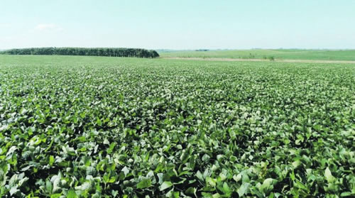

Real Chubut - Agencia de Noticias


Dicen en el campo...

Una cumbre sojera que pasó desapercibida. La fuerte y tempranera helada tomó por sorpresa a los productores. Malas noticias para el Alto Valle.
….que, mientras las principales expectativas sectoriales se centran en el discurso presidencial en la apertura, hoy, de las sesiones Ordinarias en el Congreso de la Nación, ya que se espera que la mención al campo y a su agroindustria sea más acorde con el nivel de exigencias (impositivas) que hay y los aportes que viene haciendo el campo, que en otros años, varios de los más optimistas redujeron el positivismo ante la poca trascendencia pública que tuvo la estratégica reunión de Mauricio Macri en Rosario, el miércoles. Es que allí, ante un centenar de dirigentes públicos, privados y gremiales, y hasta del gobernador socialista Miguel Lifchift, el Presidente debió ponerse un nuevo sector al hombro, tal vez uno de los menos pensados. Circundado por los ministros Dante Sica y Guillermo Dietrich, y hasta por el secretario de Agroindustria, Luis Miguel Etchevehere, acompañado por buena parte de su gabinete (que tomó nota prolijamente durante todo el encuentro), Macri debió reconocer que la otrora "vedette", o "reina de las oleaginosas", o "el yuyo", según quien encarnara el discurso, la soja que justificó buena parte de los ingresos genuinos del país durante las últimas décadas y fue la principal causante de la ampliación de la frontera agrícola argentina, también está en problemas y amerita, al igual que varios otros sectores, una nueva Cadena de Competitividad sectorial (como la carne vacuna, la pesca, la forestación, etc.) que encabeza el propio Presidente de la República. Los reclamos no fueron pocos. Con una industria con más del 50% de capacidad ociosa, con eliminación del diferencial entre poroto y subproductos; con desaparición de reintegros, con cargas laborales y costos crecientes, caminos intransitables (en muchos casos) para sacar la producción, etc. era evidente que las épocas de bonanza y crecimiento estaban muy lejos y así se lo trasmitieron a la máxima autoridad del país.
… que, probablemente también por eso, la propia gente de prensa de la presidencia optó por una convocatoria casi inexistente, y una difusión del encuentro de similar magnitud… Pero, tanto la presencia de la Mesa de Enlace, como de todas las Bolsas de granos del país, operadores de distintos niveles, además de industriales y exportadores marcaron la temperatura del encuentro que, obviamente trascendió y, después en una lista de oradores acotada a "apenas" 40 personas, se podría decir que hubo una información y una promesa que le dieron cierta esperanza a los empresarios de la cadena. La primera fue el anuncio por parte del propio Macri de que el Gobierno chino le había adelantado su decisión de comenzar a comprar -también- harina de soja argentina. La otra es que comprometió a sus ministros Nicolás Dujovne y Sica a reveer la medida de las retenciones que se le aplican a la oleaginosa y sus subproductos, hoy nuevamente rondando el 30%, y sin ventaja para los productos con algún proceso, lo que hizo crecer exponencialmente las exportaciones de porotos sin procesar (lo que agrava sensiblemente l capacidad ociosa de la industria). Y el argumento va a ser muy difícil de debilitar, ya que a partir de las medidas implementadas, habría un ingreso de divisas de, al menos, u$s1.600 millones menos por aumento en las ventas de poroto de soja (que podrían superar los 10 millones de tn /año, versus los 3-4 millones de tin históricos) en detrimento de las harinas y aceites . También algunos dirigentes de la producción se sorprendieron con el dato.
… que, al margen de esto, hubo dos noticias negativas para el sector en los últimos días. La primera fue la tempranísima, y fuerte, primera helada del año que se concentró en varias regiones, pero abarcó a buena parte del centro, sudeste y sudeste de Buenos Aires, afectando a las rojas en plena floración y a los maíces tardíos en etapa de llenado de grano. Y, aunque en los lotes sin afectación hasta ahora, los rindes son muy altos, también las pérdidas se siguen acumulando y aún falta todavía de uno a 3 meses para completar la cosecha de este estratégico ciclo 18/19. La segunda mala noticia fue el cierre de la frontera de Brasil al ingreso de manzanas y peras desde Argentina, debido a que se comprobó la presencia de la peligrosa plaga Carpocapsa. El hecho, que implica la pérdida de exportaciones por más de u$s150 millones, termina de jaquear a los productores del Alto Valle ya arrinconados por los mayores costos y la caída de demanda en el mercado interno. La pregunta que muchos se hacen es: ¿qué pasó con los controles sanitarios oficiales en embarque que no detectaron la presencia de la plaga, y hacen correr el riesgo al país, de perder otro mercado estratégico?. Se sabe que Brasil apela muchas veces a estas estrategias cuando pretende frenar ingresos del exterior. Lamentablemente en este caso parece que la sanción fue bien justificada y respondería a la falta de liquidez y de acceso al crédito de los productores, para encarar las fumigaciones y controles de plagas requerido por los frutales.
Fuente: Ambito